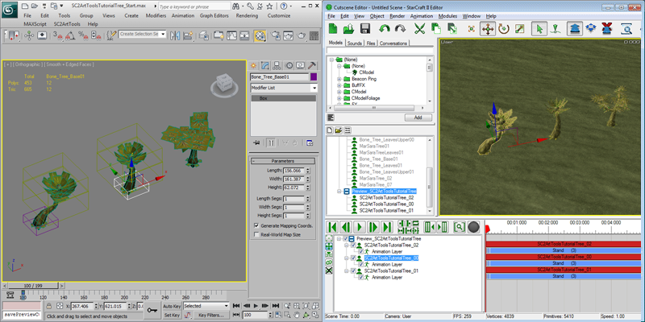
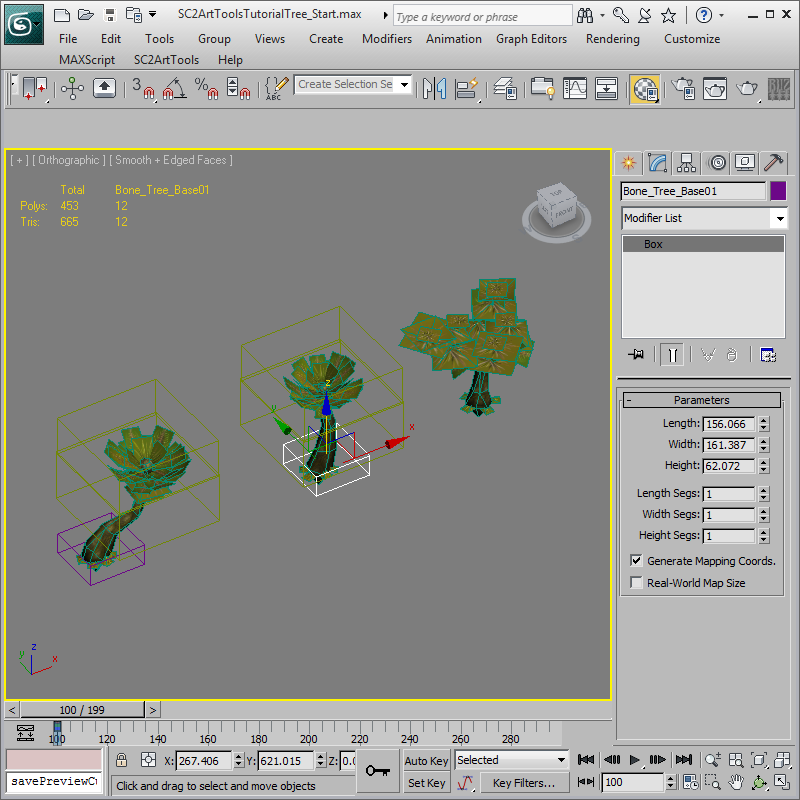
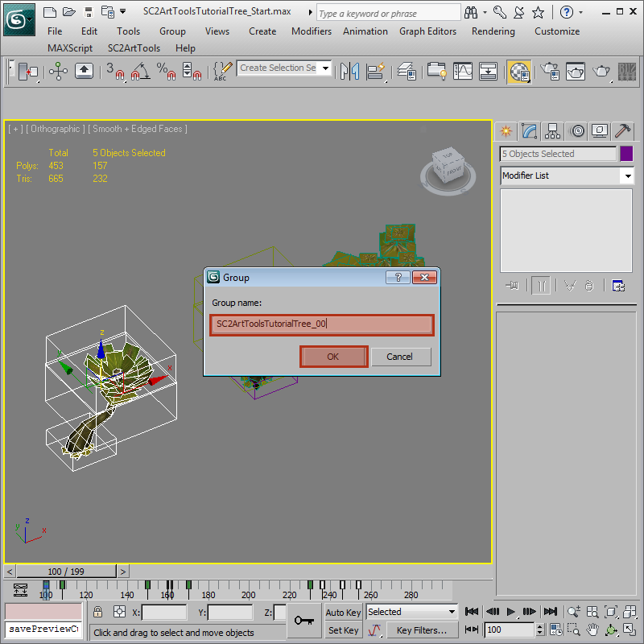
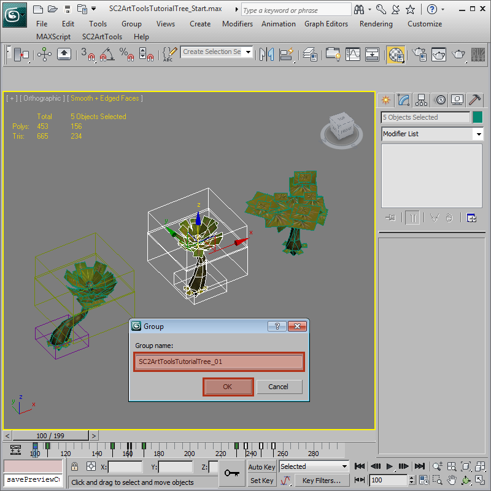
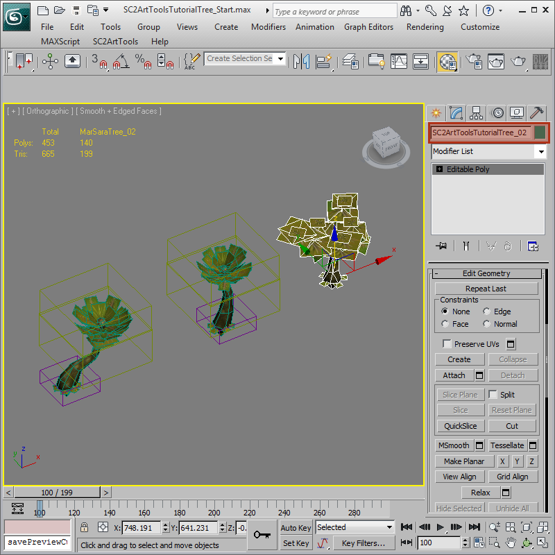
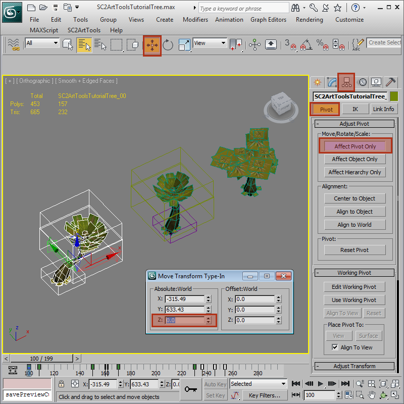
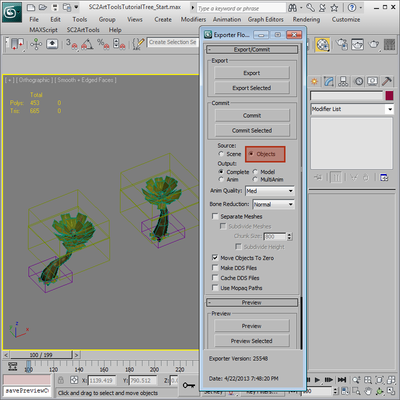
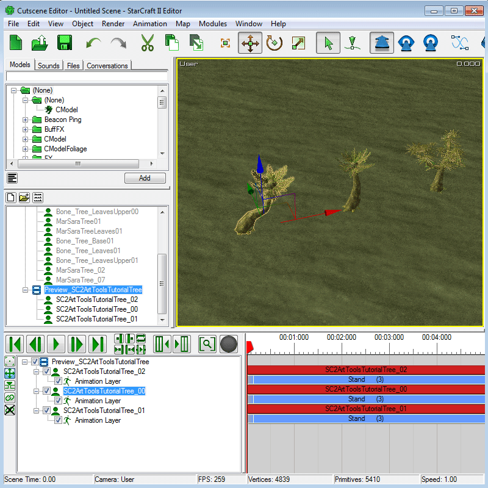

Advance Tutorial 04: Multiple Model Export
The StarcraftArtTools can export multiple models from a single 3DSMax file. In this tutorial we will take a simplified Mar Sara Tree Doodad and set it up to export into three separate models and view them in the exporter. All models that come from the same file will have the same base name, and single underscore and two digit variation count on the end.
SC2ArtToolsTutorialTree.max
SC2ArtToolsTutorialTree_00.m3
SC2ArtToolsTutorialTree_01.m3
-
Open 'SC2ArtToolsTutorialTree_Start.max'. If you look you will notice it contains three trees. Two of the trees are made of multiple bones and meshes while one is a single object already.
 -
The complex trees will need to be grouped and named for the SC2ArtTools Exporter to recognize them as a separate model. Select all of the components of the first tree and use Group > Group and type the name 'SC2ArtToolsTutorialTree_00'. Do the same thing for the second tree named 'SC2ArtToolsTutorialTree_01'.
  -
The third tree is a single object. We can just rename the object to 'SC2ArtToolsTutorialTree_02' without having to group it.
 -
We need to edit the pivot points of the two groups to reflect a new local world pivot of the model. Select a group and edit the pivot point by lowering the z of the pivot to 0 in world coordinates. This will become the m3 model's new pivot location on export. Do the same for the second group. Take this time to save the 3DSMax file to the correct name 'SC2ArtToolsTutorialTree.max'.
 -
On the 'SC2ArtTools > Export > Export Floater' set the Source to Objects. This setting will save with the 3DSMax file. The exporter will now export every separate object as its own model. On preview it ignores the naming limitations and will preview every object it can export.
 -
Preview the file. You will notice three tree models show up in the Cutscene Editor, all named correctly, each with own animations. You are now ready to commit them as needed.
